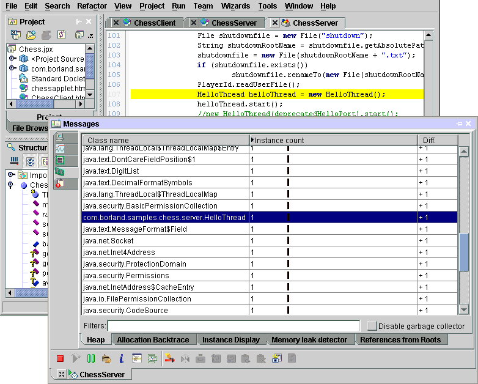

Optimizeit integration is a feature of JBuilder Enterprise
The integration of Optimizeit Suite in JBuilder makes it easy to optimize both local and distributed applications, including servlets, JSPs, applets, EJBs, CCIs, Web Services, and unit tests. To test files in your project, choose Run|Optimize Project.
When using Optimizeit, you can pinpoint memory problems, thread contentions, and dead code. The Optimizeit user interface, consisting of the tool selection, the toolbar, the view tabs and the status bar, is displayed in the message pane.

For more information, see:
Optimizeit Suite documentation in JBuilder's online help.